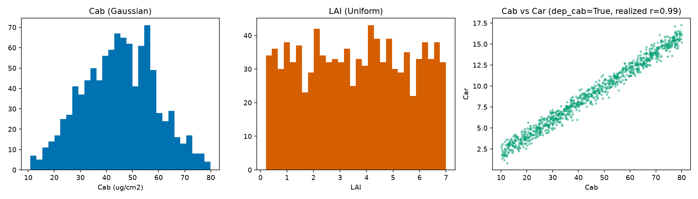
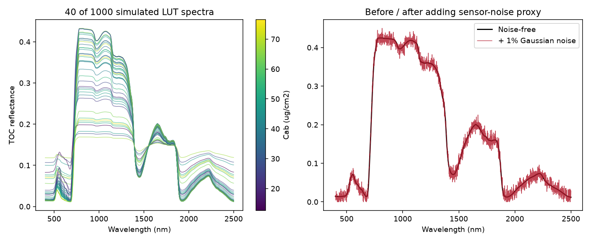

11. LUT Generation
What you will learn
What a look-up table (LUT) is, and why building one well is mostly about sampling, not the RTM call itself.
How to sample realistic trait distributions, including real trait-to-trait covariance instead of full independence.
How to add sensor-realistic noise, and split into train/validation/ test before any inversion method touches the data.
Concept
A look-up table (LUT) is a set of RTM simulations, each row a different combination of trait values and its resulting reflectance spectrum – the raw material every inversion method in Part III needs: rank spectral indices by correlation with a trait, train an ML/DL model, or match a real observation against simulated neighbours. This chapter builds one properly, at a realistic size (1000 rows – large enough that the inversion chapters that follow produce genuinely meaningful results, not an artifact of too little training data).
Python tools used
Function |
Key arguments |
|---|---|
|
|
General-purpose version: correlate any two named traits at any
target correlation ( |
Run the example
import numpy as np
from toolsrtm.sensitivity import get_distribution_lut
from toolsrtm import foursail
N_SAMPLES = 1000
# 1. Realistic per-trait distributions
lut = get_distribution_lut(
minval=dict(Cab=10, LAI=0.2), maxval=dict(Cab=80, LAI=7),
n_samples=N_SAMPLES, type_distrib=dict(Cab="Gaussian", LAI="Uniform"),
mean_gauss=dict(Cab=45), std_gauss=dict(Cab=15), seed=1,
)
print("Cab: mean=%.2f std=%.2f" % (lut["Cab"].mean(), lut["Cab"].std()))
print("LAI: min=%.2f max=%.2f" % (lut["LAI"].min(), lut["LAI"].max()))
# 2. Real trait co-variation: Car tied to Cab (a real empirical leaf-pigment relationship)
lut2 = get_distribution_lut(
minval=dict(Cab=10, Car=2), maxval=dict(Cab=80, Car=25),
n_samples=N_SAMPLES, type_distrib=dict(Cab="Uniform", Car="Uniform"),
dep_cab=True, seed=1,
)
print("Realized Cab-Car correlation:", np.corrcoef(lut2["Cab"], lut2["Car"])[0, 1])
# 3. RTM simulation: one row -> one spectrum, 1000 times
rsoil = np.full(2101, 0.15)
rows = []
for i in range(N_SAMPLES):
row_lut = dict(N=1.5, Cab=lut["Cab"][i], Car=8, Anth=1, Cbrown=0, EWT=0.01, LMA=0.009,
alpha=40, LIDFa=-0.35, LIDFb=-0.15, TypeLidf=1,
LAI=lut["LAI"][i], hspot=0.01, tts=30, tto=0, psi=0)
sail = foursail(row_lut, rsoil, leaf_model="PROSPECT-D", spectrum_all=True)
rows.append(sail.rsot)
spectral_lut = np.stack(rows) # (1000, 2101)
# 4. Adding noise: simulated reflectance is noise-free, real sensor data never is
rng = np.random.default_rng(7)
noisy_lut = np.clip(spectral_lut + rng.normal(0, 0.01, spectral_lut.shape), 0, 1)
# 5. Train / validation / test -- never evaluate an inversion on rows it trained on
from sklearn.model_selection import train_test_split
idx = np.arange(N_SAMPLES)
train_idx, test_idx = train_test_split(idx, test_size=0.3, random_state=1)
print("Train rows:", len(train_idx), " Test rows:", len(test_idx))
Result
Printed output (exact, deterministic):
Cab: mean=44.98 std=13.90
LAI: min=0.20 max=7.00
Realized Cab-Car correlation: 0.9900876992344007
Train rows: 700 Test rows: 300
{kind=link}

Real output: Cab sampled Gaussian (visibly bell-shaped, clipped to [10, 80]), LAI sampled Uniform (flat), and Car tied to Cab via dep_cab=True – a real, strong (r=0.99) linear relationship, not independent sampling.
{kind=link}

Real output: 40 of the 1000 simulated spectra (left, colour = Cab – most of the visible spread is actually driven by the co-varying LAI, not Cab alone), and one spectrum before/after adding a 1% Gaussian noise proxy (right).
Interpretation
The dep_cab=True constraint produces a real, strong relationship
(r=0.99) between Cab and Car – deliberately much tighter than
“somewhat correlated,” reflecting how tightly co-regulated chlorophyll
and carotenoid pools actually are in healthy leaf tissue. Sampling them
fully independently instead (the default) would let an inversion method
implicitly learn a Cab-Car relationship that doesn’t exist in real
leaves, and then fail on real data where it does. In the spectra sample,
most of the visible NIR-plateau spread by eye traces back to LAI (not
color-coded here) rather than Cab – exactly the kind of thing Chapter
10’s sensitivity heatmap already predicts: Cab dominates the visible,
not the NIR, so coloring NIR-plateau spread by Cab alone won’t explain
much of it. The noise panel shows a physically reasonable proxy: real
sensor noise is neither perfectly smooth nor overwhelming – 1% Gaussian
noise visibly roughens the curve without destroying its shape, which is
the point (12. LUT Inversion and 13. Machine-Learning Inversion
train on data like this, not the noise-free ideal).
Try it yourself
Use
get_cor()to tieCaband a physiological trait likeVcmax25at a moderate target correlation (rho=0.6) instead of the strong built-in Cab-Car tie, and check the realized correlation matches roughly.Switch the noise model from additive (
+) to multiplicative (* (1 + noise)) and compare how much more the SWIR (already lower reflectance) is affected relative to the NIR plateau.Reduce
N_SAMPLESto 50 and re-run 12. LUT Inversion’s retrieval on it – compare the result’s stability against the 1000-row version here.
Common mistakes
A LUT too small for the trait space it’s meant to cover gives inversion methods too few realistic “neighbours” to match against or learn from – 1000 rows is a reasonable floor for a 2-3 trait problem, not an arbitrary nice-looking number.
Sampling every trait independently when real ones co-vary (
Cab/Car,Cab/Vcmax25) teaches an inversion method relationships that don’t exist in nature.Adding noise after the train/test split (fit any noise-parameter choice using only the training rows) avoids leaking test-set information into modelling decisions – the same train/test discipline Chapter 14 applies to normalization.
Next
12. LUT Inversion – the simplest way to go from an observed spectrum back to a trait: matching it against this LUT directly.
Using R? -> ToolsRTM Tutorial 05: Building LUTs